Inhalt Index DeskTop Bronstein

 Funktionen und ihre Darstellung Funktionsbegriff Methoden zur Definition einer reellen Funktion
Funktionen und ihre Darstellung Funktionsbegriff Methoden zur Definition einer reellen Funktion


In der Regel werden die folgenden drei Formen genutzt:
| 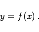 | (2.4) |
| Beispiel |
|
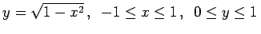. Hierbei handelt es sich um die obere Hälfte des Einheitskreises mit dem Mittelpunkt im Koordinatenursprung. |
| 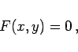 | (2.5) |
falls sich diese Gleichung eindeutig nach y auflösen läßt.
| Beispiel |
|
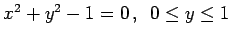. Hierbei handelt es sich ebenfalls um die obere Hälfte des Einheitskreises. Man beachte, daß mit x2+y2+1=0 keine reelle Funktion definiert wird. |
| 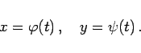 | (2.6) |
Die Werte von x und y werden als Funktion einer Hilfsveränderlichen t angegeben, die Parameter genannt wird. Die Funktionen  und 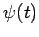 müssen denselben Definitionsbereich haben.
und 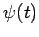 müssen denselben Definitionsbereich haben.
| Beispiel |
|
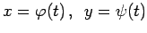 mit 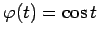 und 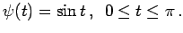 Hierbei handelt es sich abermals um die Darstellung der oberen Hälfte des Einheitskreises mit dem Mittelpunkt im Koordinatenursprung. |
| Beispiel |
|
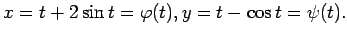 |
| Beispiel B |
|
Die Funktion 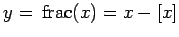 heißt Restfunktion und wird ,,fractional part of x`` gelesen. Sie gibt die Differenz zwischen x und [x] an. |
| Beispiel C |
|
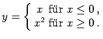 |
| Beispiel D |
|
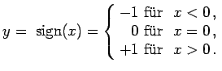 |